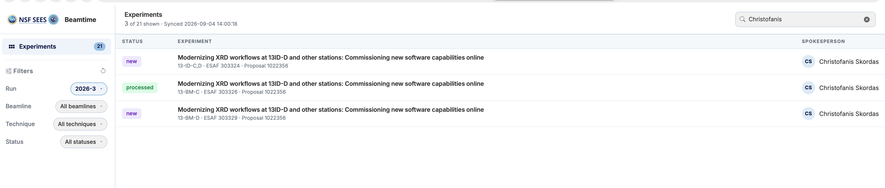
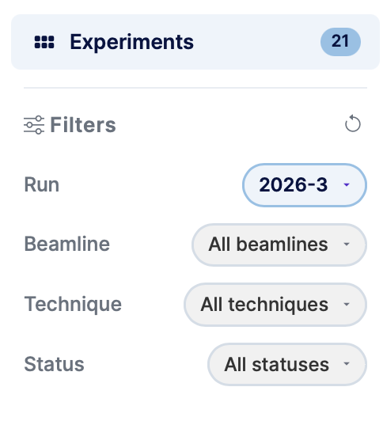
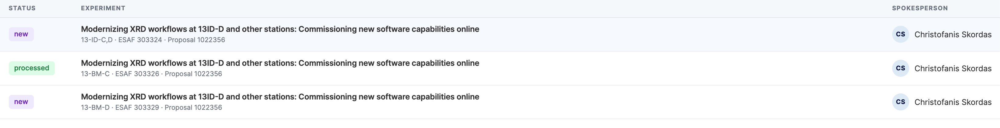

The Dashboard
The dashboard is the main screen after login. It shows the list of experiments for the current run and lets you filter, search, and open individual experiments.

Layout
The dashboard is split into two areas:
- Left sidebar — Filters, navigation, and your user panel.
- Main content area — The experiments table with search and status.
Left sidebar

Filters
Use the dropdowns to narrow down the experiments list:
| Filter | Description |
|---|---|
| Run | The beamtime run (e.g. 2026-1). Defaults to the current run. |
| Beamline | Filter by a specific APS beamline. |
| Technique | Filter by experimental technique within a beamline. |
| Status | Filter by processing status (New, Pending, Processed, etc.). |
Click Reset Filters to clear all selections and return to the default view.
User panel
The bottom of the sidebar shows your username and initials avatar. Click Logout here to end your session.
Experiments table

Each row in the table represents one experiment and shows:
- Status — A colour-coded badge indicating the current processing state (see statuses below).
- Experiment — The experiment title, ESAF number, proposal number, and assigned beamline.
- Spokesperson — The lead researcher for the experiment.
Search
Type in the search box (top-right of the table) to filter experiments by title, ESAF number, or spokesperson name in real time.
Opening an experiment
Click any row to open the experiment detail view.
Experiment statuses
| Status | Meaning |
|---|---|
| New | Experiment has been imported but not yet configured. |
| Pending | Experiment has been added to the queue and is awaiting processing. |
| Modified | Experiment was previously processed but has since been edited. |
| Processed | Experiment has been fully processed (folders created, DOI minted). |
| Locked | Experiment is locked and cannot be edited. |
| Error | An error occurred during processing. |